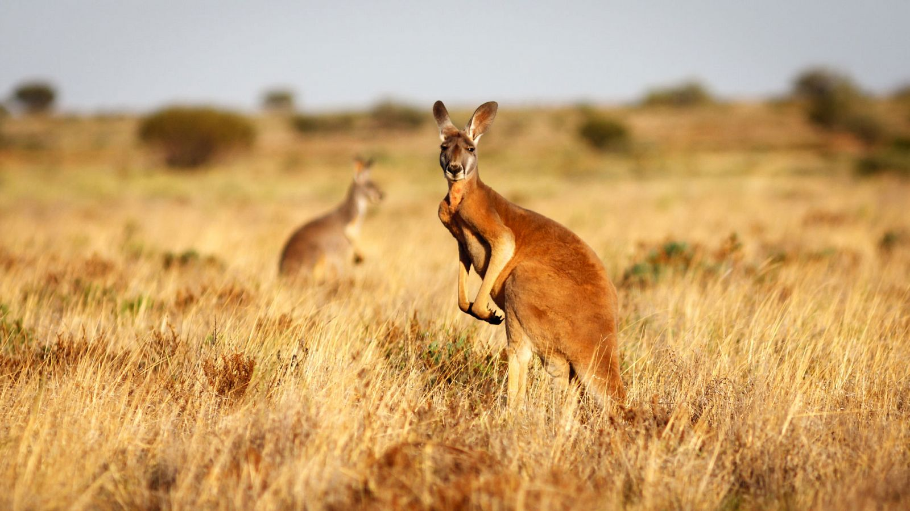
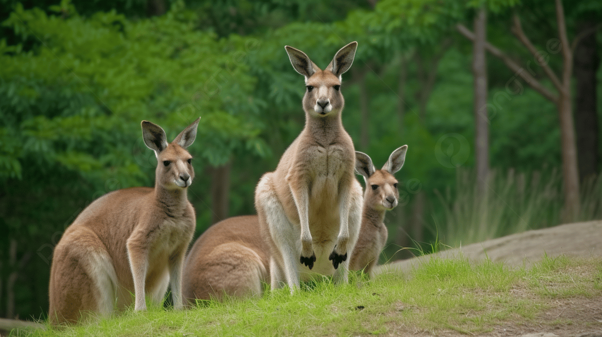

Canguros: Saltadores del Mundo

¿Qué son los canguros?
Los canguros son marsupiales nativos de Australia. Son conocidos por su capacidad de saltar grandes distancias y por llevar a sus crías en una bolsa ventral.
Existen cuatro especies principales de canguros: el canguro rojo, el canguro gris oriental, el canguro gris occidental y el canguro antilopino.

Características principales
- Tamaño: Pueden medir hasta 1.8 metros de altura.
- Velocidad: Alcanzan hasta 70 km/h en cortas distancias.
- Hábitat: Prefieren áreas abiertas como praderas y sabanas.

Datos curiosos
Los canguros son animales sociales que viven en grupos llamados "mob". Además, son símbolos icónicos de Australia, apareciendo en su moneda y en el escudo nacional.